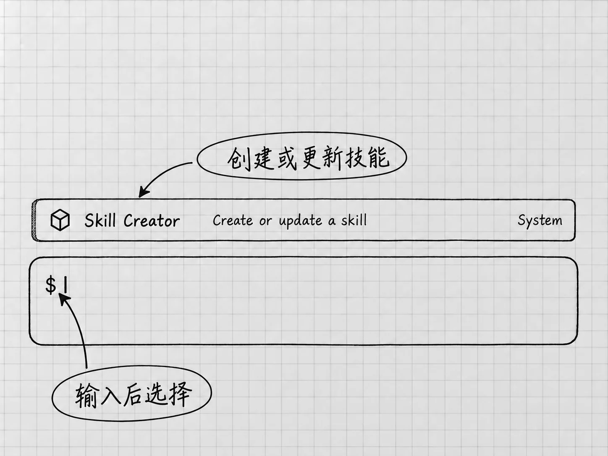

第20章 Skill：把已经跑通的做法保存下来
项目说明保存的是「在这个文件夹里通常怎样工作」。如果你反复做的是一套具体流程，例如把几份零散备忘整理为清单，再核对遗漏并另存结果，就可以考虑把做法保存成 Skill，技能。
技能把特定任务的说明和必要资源放在一起，供Codex在适用的时候读取。它复用的是已经有效的做法。流程还没想清楚时，先别急着做成技能。
什么时候值得做成技能
只改一次文件名，直接说就可以。每次都要重讲输入要求、整理规则和检查标准，而且已经做过几次、知道哪些地方容易出错，就值得保存。
技能和模型各有分工：模型负责理解和执行，技能提供这类工作该遵循的流程。材料、工具和权限仍要另外具备。技能里写了「读取邮箱」，邮箱还得先连接和授权。技能的用途
一个技能只处理一个明确的问题比较好。把整理清单、写文章、查网页和发消息塞进同一个技能，适用范围就含混了，是否按预期工作也难以检查。
先看看有没有已经可用的
在桌面侧栏打开 Skills，查看已有技能的名称和说明。回到Codex输入区，也可以输入 $，从可用项里选择；已启用的技能还可能出现在斜线菜单中。菜单里实际出现的才是你能用的，书中的示例名称只是举例。查看与创建技能
Codex支持用$明确选择技能，也可以根据请求与技能描述的匹配程度，自己决定何时使用。名称相似的技能，做法可能不同，使用前看清适用范围、需要的输入和会产生的结果。
某个技能要求联网服务、特定软件或模板时，先检查这些条件。当前只处理本地文本，选只依赖本地文件的做法就行，下一章的插件连接可以晚点再学。
用内置创建器，把已有流程写下来
Codex提供内置的 $skill-creator，用于创建或更新技能，用它之前无须安装任何外部服务插件。输入$找到并选择它，再说明你已经跑通的流程、希望何时调用、哪些内容每次会变。官方创建方式

图：输入$后，可以在可用技能中找到Skill Creator。图中保留真实英文名称；本书拟定的notes-to-todos要先创建，才会出现在你自己的可用项里。
沿用前面的清单整理，可以这样描述：
请把我们已经完成并核对过的「零散备忘整理为待办清单」做成一个个人技能，名称先拟为notes-to-todos，只用自然语言说明，不加脚本。
每次由我指定输入文件和输出位置。先确认读到哪些材料，再合并同一事项，保留已有日期、数量和状态；没有依据的信息保持未知。原材料不改，不代办记录里的事情。输出后对照来源检查遗漏、重复和事实变化，再报告实际文件位置。
技能只在整理备忘为清单时使用，不要接管所有文章修改。先让我看说明草稿，指出需要的文件和工具条件，再保存为当前Codex可发现的个人技能，并报告准确名称与保存位置。
notes-to-todos是本例拟定的名称，你的应用里并没有预装它。创建器可能询问用途或输入格式，回答会影响流程的问题即可。官方默认倾向于只写指令；这个流程里没有需要精确计算或额外工具的环节，用自然语言说明就够了。
检查技能里的要求，再试用
一个技能通常有自己的文件夹，主要说明放在 SKILL.md 中，至少包含名称、描述和具体做法。这些字段由创建器来写，你要做的是把它给出的说明读一遍。
重点检查几个容易被写死的地方：是否固定成某台电脑上的路径，是否假定文件永远叫某个名字，是否把「日期未定」擅自改成自动安排，是否多出了发送或删除动作。每次会变化的部分留给调用时指定，技能才能用于下一份材料。
保存后，检查Skills或输入菜单里是否出现对应项。本地技能与修改通常会自动被发现；没有出现时，核对保存位置、作用范围和名称，必要时重启Codex。本地发现与更新
新建一个任务，选择这个技能，并提供一套已知材料和新的输出位置，例如：
使用刚保存的技能，读取「材料」里的两份原备忘，把结果另存为「结果/技能试用清单.txt」。本次仍是最初记录的状态，不根据其他任务猜新的完成情况。
等结果保存以后，按第4章的关键事实核对。技能能被选中，说明入口有了；生成的内容符合要求，才说明这次使用有效。试用结果不对时，先定位问题出在技能规则、当前材料还是本次要求，再修改对应的部分。
描述决定技能什么时候被用上
Codex开始时先看到技能名称和描述，决定适用后再读取完整说明。所以描述要说清什么时候用，也说清不适合什么情形。一个叫「万能助手」的技能，它无从判断什么时候该选。技能说明的加载方式
只希望在明确选择时才调用的话，让创建器按官方支持的调用设置调整。在说明里写一句「平时不要乱用」，效果没有保证。改后分别试一次明确调用和一次不相关的请求，看它是否还会过度介入。
结果模板、参考材料可以随技能保存，前提是有实际用途。每次任务的私人原件不要收进技能，以后使用时会混入旧内容。保留无敏感信息的示例与规则，就足以说明做法。
修改、停用与重新使用
发现技能遗漏了一条规则，可以选择$skill-creator，明确要更新哪个已有技能及其路径，说明只改哪一处。修改后用原来容易出错的材料再检查一遍，确认已经有效的部分没有被破坏。
暂时不希望它被使用时，分清「这次别用」和「长期停用」。前者写在当前请求里；后者使用本地技能配置中的启用设置。你可以让Codex先定位该技能的准确路径，说明将修改哪条配置，再只把这一个技能设为停用，保留文件与其他设置，之后重启并检查。整个过程在对话里完成，技能文件夹也留着，以后还能重新启用。官方停用方式
材料结构变了，技能也要跟着更新。上一次跑通的技能，遇到新文件未必适用；每次仍要提供当前的输入、输出与特殊条件，重要成果照常核对。
Mac还有可选的 Record & Replay，可以把一次演示操作整理成技能，需要Computer Use可用并启用。它适合稳定、便于演示的流程；本书的文字流程用对话创建就够了。录制与重放说明